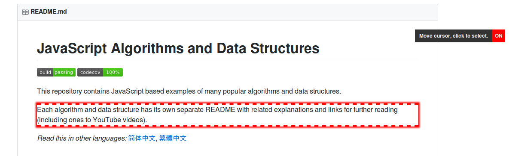
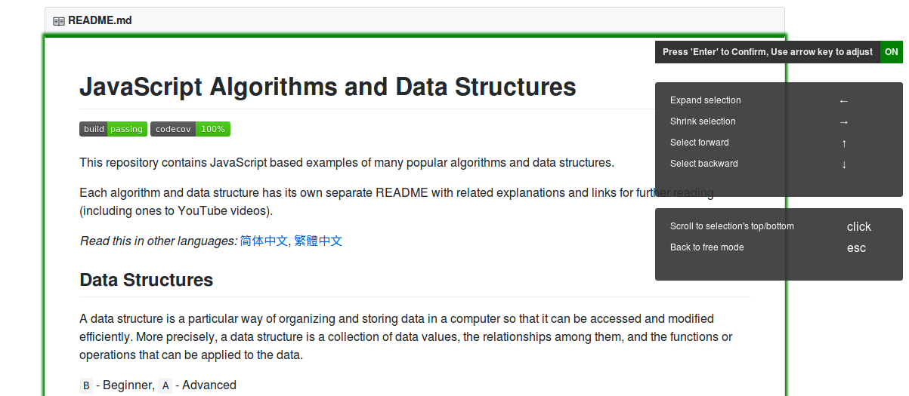
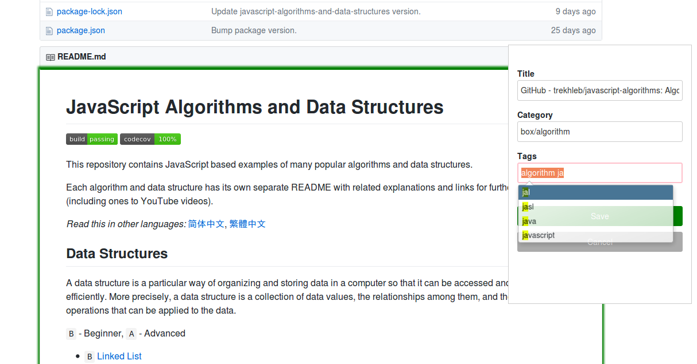
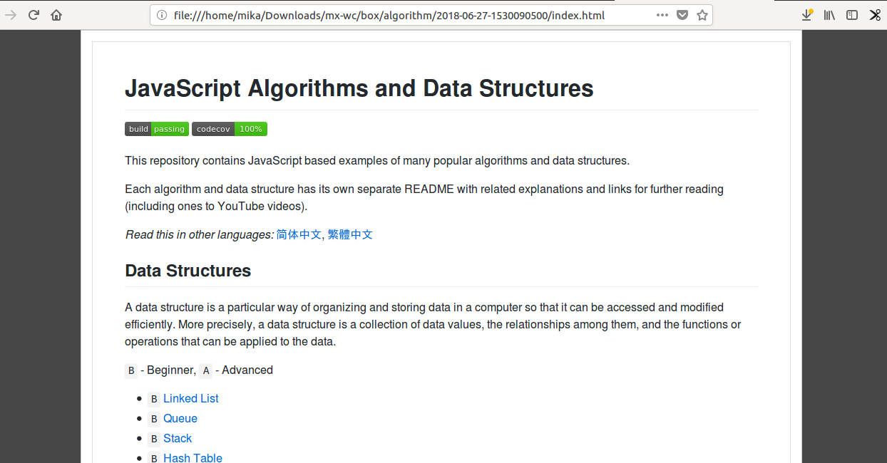
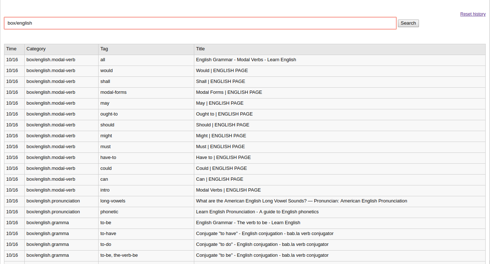
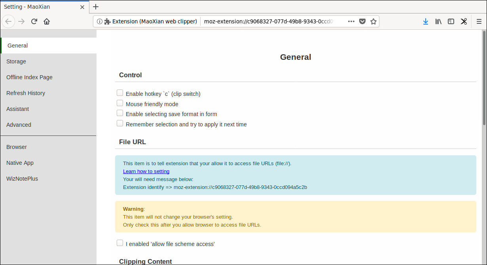

MaoXian Web Clipper screenshots
Free mode (自由选择模式)
Focus mode (选中模式)
Save/Archive (归档保存)
Result (裁剪结果)
History page (裁剪历史页)
Setting page (设置页)
Palm Device （掌上设备）
MaoXian can also be used on mobile browsers. （你也可以在手机浏览器上面使用 MaoXian）